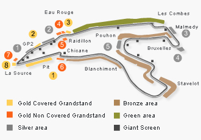
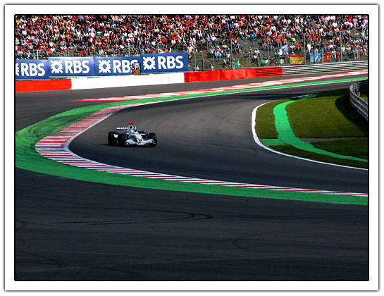

Formula 1 Grand Prix Spa 2007 FAQ
September 17, 2007 | Comments (0)
- How long was the drive?
- It took us about three hours to get there and to drive to Stavelot, Belgium
- Was it easy to find?
- Yes, before Spa you get a number of road signs to guide you to the right part of the track. Depending how much money you spend you need to follow Green, Bronze, Silver or Gold
- What does the ticket look like?
- It looks cheap!
- Do the cars really make a lot of noise?
- Yes they do!
- Do the cars really drive fast?
- It does not look fast but if you compare the round time for the Porsche CUP with F1 cars, the difference was really big and noticeable.
- Where do I need to stand for the best views?
- As always, it depends — mostly on the amount of money you want to spend.
We’ve been at the following places:
- 6: It is quite small and need to sit in the dirt or be there very early but you get the same view as the Gold tribune. It is behind the fence but also has a big screen. Going direction Stavelot shows the cars at top speed but you need to look between the trees to see them.
- The big corner near Stavelot gives a nice overview, you can stand a bit higher and look over the fence.
- Direction 5 is fences and double fences. Advantage are the big screens.
- The other side of the silver tribune is probably one of the better place but this is really very crowdy. See the image below which is taken from the opposite side.
GP Belgium; September 16, 2007; nikon 5700; © janco tanis - Green area Eau rouge. Here you see the cars at top speed. We’ve been on the inside of the track but there you sit behind a fence. On the ‘green’ area you are able to look over the fence.
- Did the race take long?
- No, it was over before we noticed.
Comments
Post a comment
“Those are my principles. If you don't like them I have others.” — Groucho Marx (1895-1977)
Copyright © 2003-2007 Janco Tanis. All rights reserved.
XHTML, CSS, RSS feeds. Powered by Movable Type. Hosted @Home with a domain by hostway.
XHTML, CSS, RSS feeds. Powered by Movable Type. Hosted @Home with a domain by hostway.
Use the form below to add your relevant comments, suggestions. Be aware that I reserve the right to edit any raw language, abusive and/or inappropriate comments that's too far off topic or remove it all together.